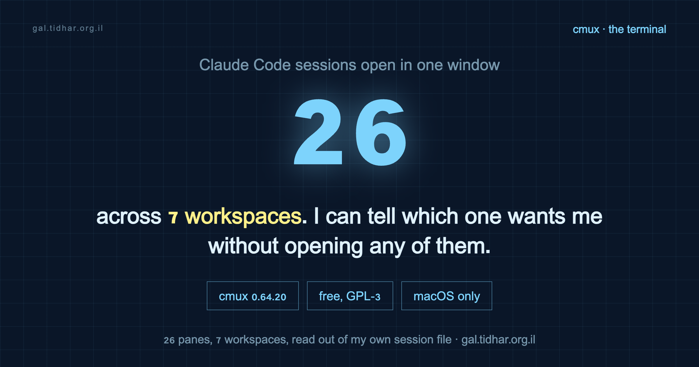

cmux · Claude Code · 26 panes, 7 workspaces
The terminal I run 26 Claude Code sessions in, and my exact config
I have 26 Claude Code panes open across 7 workspaces in a single window right now. That is not a flex, it is a logistics problem, and the thing that solved it is a free terminal called cmux that almost nobody I talk to has installed. This is what it does, my full cmux.json line by line, the Claude Code settings that pair with it, and the part I did not expect: it only fits in 24 GB because the IDE has not been open since June.

claude processes on the machine right now, 25 of them children of cmux.The problem is the notification, not the terminal
Run four agents in parallel and one of them finishes. macOS tells you Claude is waiting for your input. Which Claude? Out of how many? I used to go tab, tab, tab, tab hunting for it, and by the time I found the right pane I had forgotten what it asked me.
iTerm and Ghostty are excellent at being terminals. Neither of them knows an agent is running inside it. tmux gives you a status line you still have to decode yourself.
That gap is the entire pitch. cmux is a native macOS terminal built on Ghostty's rendering engine, so your existing ~/.config/ghostty/config - theme, font, keybinds - carries over unchanged. On top of that it adds the thing that was missing: it knows about agents.
- The pane that needs you rings and flashes. You look, you do not hunt.
- Vertical tabs in a sidebar, each showing git branch, PR status, working directory, and listening ports.
- Session restore that brings scrollback and agent sessions back where they were after a quit or a reboot.
- A scriptable embedded browser pane, a socket/CLI API, and SSH workspaces with native splits.
It does not decide what your agents do and it does not wrap Claude Code in a UI. It also does not lock you into one agent - the same window runs Claude Code, Codex, Gemini CLI, whatever you like, and it will spawn Claude Code teammates as visible panes if you use them. What it is, underneath all of that, is a terminal that knows an agent is running in it. That turned out to be the only missing piece.
brew install --cask cmux. I am on 0.64.20. There is a paid Founder's Edition for priority support and early access, and nothing in this post depends on it.
The mechanism worth knowing: file-managed settings
Config lives at ~/.config/cmux/cmux.json and it is JSONC - JSON with comments. The clever part is what a comment means:
An uncommented key in the file is file-managed. It overrides the in-app Settings UI, and the UI cannot change it. Comment the key out and the setting is handed back to the UI.
So the file is not a dump of every option, it is a list of decisions you have deliberately taken away from yourself. Reload with Cmd+Shift+, (or cmux reload-config) without closing a single session. Point your editor at the published schema and you get completion and validation for free:
"$schema": "https://raw.githubusercontent.com/manaflow-ai/cmux/main/web/data/cmux.schema.json"Most of my “tuned” config was the defaults, written down
Before publishing this I diffed my file against the schema's declared defaults. That was humbling. The majority of what I had carefully pinned is exactly what cmux already does out of the box. Pinning it is not useless - file-managed means the UI cannot drift it later, which is the point of pinning - but it is not tuning, and calling it tuning would be a lie.
| Setting | Mine | Default | Real change? |
|---|---|---|---|
automation.suppressSubagentNotifications | true | true | no |
automation.claudeCodeIntegration | true | true | no |
automation.socketControlMode | cmuxOnly | cmuxOnly | no |
terminal.autoResumeAgentSessions | true | true | no |
terminal.agentHibernation.enabled | false | false | no |
app.confirmQuit | always | always | no |
app.appearance | dark | system | cosmetic |
app.reorderOnNotification | false | true | yes |
terminal.copyOnSelect | true | false | yes |
terminal.agentHibernation.idleSeconds | 120 | 5 | yes |
sidebar.showProgress | false | true | yes |
browser.openTerminalLinksInCmuxBrowser | false | true | yes |
browser.interceptTerminalOpenCommandInCmuxBrowser | false | true | yes |
Seven deviations out of twenty-five pinned keys, and one of the seven is appearance: dark. If you install cmux and change nothing, you already have most of my setup.
The three that matter, and why
app.reorderOnNotification: false
The default floats a workspace with a new notification toward the top of the sidebar. With two workspaces that is helpful. With seven it means the list rearranges itself every time an agent breathes, and the position you learned five minutes ago is gone. I would reach for the third row and hit something else.
Turning it off makes position stable and lets the ring carry the signal instead. Location tells me which project; the flash tells me who needs me. Two channels, no collision.
terminal.agentHibernation.enabled: false
Hibernation kills idle agent processes to free RAM and CPU, then resumes them when you come back. Sensible on paper. The problem is the definition of idle: no terminal output or input for N seconds. An agent thinking quietly, or waiting on a slow tool call, produces no output and looks exactly like an abandoned one.
The default idleSeconds is 5. I raised it to 120 before I decided the whole feature was not for me and turned it off, which is why my file still carries a value that no longer does anything. I left it there deliberately - if you have less RAM to spare, that is the knob to reach for before you disable the feature. Critical-memory-pressure hibernation stays active either way, so this is not a choice between safety and nothing. Why I can afford to refuse it at all is a separate story, further down - it is not that 26 agents are cheap.
browser.openTerminalLinksInCmuxBrowser: false
cmux ships a good embedded browser and agents can drive it. I turned it off for terminal links anyway, along with interceptTerminalOpenCommandInCmuxBrowser, because my agents already have their own browser. Their browser is for them; when I click a link I want it in the window where I am logged into everything. Splitting those two was the whole point of that setup, and letting cmux quietly reunite them would undo it.
My full cmux.json
Copy it whole, or copy the two blocks you care about. Every uncommented key here is a key the Settings UI can no longer change.
{
"$schema": "https://raw.githubusercontent.com/manaflow-ai/cmux/main/web/data/cmux.schema.json",
"schemaVersion": 1,
// JSONC. UNCOMMENTED keys are "file-managed": they override the Settings UI.
// To hand a setting back to the UI, comment it out or delete it.
// Reload after editing: Cmd+Shift+, (or `cmux reload-config`).
"app": {
"appearance": "dark",
"confirmQuit": "always", // 26 panes behind one Cmd+Q
"workspaceInheritWorkingDirectory": true,
"reorderOnNotification": false // stable position; the ring carries the signal
},
"terminal": {
"agentHibernation": {
"enabled": false, // a quiet agent is not an idle agent
"idleSeconds": 120, // if you do enable it, 5s is far too eager
"maxLiveTerminals": 12
},
"autoResumeAgentSessions": true,
"copyOnSelect": true,
"showScrollBar": true
},
"notifications": {
"paneFlash": true,
"unreadPaneRing": true,
"dockBadge": true,
"showInMenuBar": true,
"sound": "default"
},
"sidebar": {
"watchGitStatus": true, // branch/PR metadata without polling git
"showPullRequests": true,
"showPorts": true,
"showProgress": false, // one spinner per workspace is enough
"branchLayout": "vertical"
},
"automation": {
"socketControlMode": "cmuxOnly", // scriptable, but only cmux drives the socket
"claudeCodeIntegration": true,
"suppressSubagentNotifications": true // subagents finish constantly; only the parent should ring
},
"browser": {
"openTerminalLinksInCmuxBrowser": false,
"interceptTerminalOpenCommandInCmuxBrowser": false
}
}Two keys deserve a note even though they match the defaults, because they are the ones that stop the notification system from becoming noise:
suppressSubagentNotificationshides completion notifications from nested child agents while keeping their events in the Feed. If you use subagents or workflows at all, this is the difference between a signal and a slot machine.socketControlMode: "cmuxOnly"keeps the control socket usable by cmux itself and nothing else. The socket can create workspaces, split panes and drive the browser. That is a lot of blast radius to hand to any process that finds the socket path.
The Claude Code settings that pair with it
cmux only pays off if Claude Code is also set up to be run many-at-once. These are the keys in my ~/.claude/settings.json that specifically matter for parallel work - the full file, with the caching rationale, is in claude-code-starter.
| Setting | Value | Why it matters with many panes |
|---|---|---|
remoteControlAtStartup | true | Every session is reachable from the phone without typing /remote-control. With 26 panes you will not do it by hand. |
agentPushNotifEnabled | true | The pane ring covers you at the desk; this covers you away from it. |
CLAUDE_AUTOCOMPACT_PCT_OVERRIDE | 40 | Compact early. An 85%-full window is re-read at 85% every single turn, times however many sessions are live. |
tui | fullscreen | One agent per pane, no scrollback ambiguity about which output is current. |
statusLine | command | Each pane says what it is working on, so the sidebar preview is readable at a glance. |
MAX_MCP_OUTPUT_TOKENS / BASH_MAX_OUTPUT_LENGTH | 25000 / 50000 | Caps runaway tool output. One session dumping a 200k-line log is annoying; several doing it at once is a lost afternoon. |
permissions.deny | reads of .env, node_modules, build dirs, keys, logs | Fewer prompts to answer means fewer panes sitting blocked while you are looking elsewhere. |
The pattern in all of them: at one session these are preferences. At twenty-six they are the difference between a workspace and a switchboard.
The memory only worked out because the IDE is gone
Twenty-six agents is not free. Resident memory on a 24 GB machine, sampled three times a few seconds apart because it moves while agents work:
| What | Resident memory |
|---|---|
| 26 Claude Code panes | 2.9 - 3.3 GB |
| cmux itself, plus 174 shells and helper processes | 0.76 GB |
| PyCharm | not running |
Under 4 GB for the whole thing. That last row is what makes the other two affordable. PyCharm is installed and Spotlight says I last opened it on 11 June - two months ago, and the folder I keep every project in is called PycharmProjects.
I did not decide that. At some point I stopped reading code in an editor. I read the diff, I read what Claude says it did, I check that it runs, and I send it to review. The IDE was still sitting there indexing, holding a project model, and offering completion for a file I was not typing in. That memory moved to the agents.
Which is also why I can afford to refuse agentHibernation. Turning it off is a RAM decision, and the RAM came from somewhere. If you still live in an IDE, keep hibernation on and raise idleSeconds instead - the trade is real, it just does not apply to me any more.
I am not claiming this is how you should work. It is where I ended up, and the honest version of the story is that the terminal did not replace the IDE by being better at reading code. It replaced it by being where the work moved.
What I would tell someone installing it today
- Install it, change nothing, and use it for a week. The defaults are good and you will not know which knob you need until something annoys you.
- The first thing that will annoy you is the sidebar rearranging itself. That is
reorderOnNotification. - Do not treat the config file as a place to write down defaults. Write down decisions. A key in that file should answer “why is this not what cmux ships with?” - and if it cannot, at least know that you pinned it so the UI cannot drift it.
- macOS only. If you are on Linux this post is not actionable, and I have not found an equivalent worth recommending.
Three quarters of what I thought was a carefully tuned setup was the defaults. That is the normal state of a config file nobody re-reads, and it is worth diffing yours against the schema before you tell anyone it is tuned.
Everything referenced here
The cmux config above is complete and copy-pasteable. My Claude Code settings, status line and hooks are public and generic in the starter repo.